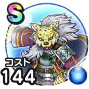

ギュメイ将軍
覚醒千里行(シルバーデビル編)こころ最大コスト+4スキルの斬撃ダメージ+10%けもの系へのダメージ+10%魅了耐性+10%混乱耐性+10%【短剣】会心率+2%【片手剣】スキルの斬撃ダメージ+4%【両手剣】全属性ダメージ+4% / 9.0点
くわしい特徴
【ランク特殊効果】 こころ最大コスト+4スキルの斬撃ダメージ+10%けもの系へのダメージ+10%魅了耐性+10%混乱耐性+10%【短剣】会心率+2%【片手剣】スキルの斬撃ダメージ+4%【両手剣】全属性ダメージ+4%